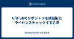

EmotionTechテックブログ
https://tech.emotion-tech.co.jp/
株式会社エモーションテックのProduct Teamのメンバーが、日々の取り組みや技術的なことを発信していくブログです。
フィード

GitHubのリポジトリを横断的にライセンスチェックする方法 1
1
EmotionTechテックブログ
はじめに こんにちは、PMのかどたみです。 今回はライセンスに関するお話です。以前cargo-deny によるクレートのライセンス確認 という記事でよしかわさんにRustにおいて採用しているクレートに意図しないライセンスが含まれていないかをチェックする方法を紹介してもらいました。 Rustであれば記事の方法をなぞればよいのですが、エモーションテックではRustの他にもTypeScriptやPythonといった言語も利用してアプリケーション開発を行っています。 今回は言語をまたがってライセンスチェックができないか検討したのでその紹介をしたいと思います。 背景 Rust以外の言語でのライセンス管理…
14日前

バグ分析を始めました
EmotionTechテックブログ
はじめに こんにちは、QAチームのもときです。以前、参入後のQAチームの取り組みについて、以下の記事で紹介させていただきました。 https://tech.emotion-tech.co.jp/entry/two-years-passed-enter-qa-team この記事内で紹介できなかったことがいくつかあり、その中から今回はバグ分析について紹介したいと思います。 QAチームは日々、自社サービスに対してのQA活動やテストを実施しております。自社サービスは、2週間ごとのスプリントで開発タスクを決め、開発→テスト→リリース→振り返り という流れで対応しています。テストで検出した不具合はバグレポ…
1ヶ月前
フロントエンドアプリケーションの assets ファイルのサイズを監視する
EmotionTechテックブログ
はじめに こんにちは、あるいはこんばんは。フロントエンドエンジニアの id:kasaharu です。 Web アプリケーションにユーザーがアクセスしてきたとき、ユーザーはブラウザを介して HTML / CSS / JavaScript といった多くの assets をダウンロードすることが多いのではないでしょうか？ フロントエンド技術の進化に伴い、ユーザーがダウンロードする assets ファイルの数は増え、またファイルひとつひとつのサイズも増加しています。 ファイル数やサイズの増加はユーザーがそのアプリケーションを使えるようになるまでの時間が増えることにもつながるため望ましくありません。 遅…
1ヶ月前
Google Cloud Workflows で Cloud Run Jobs を安定運用する方法
EmotionTechテックブログ
こんにちは。バックエンドエンジニアの李です。弊社ではアンケート回答の分析など時間のかかる処理の実行環境として Cloud Run Jobs を活用しています。そこで今回は Cloud Run Jobs を使ったプロダクトを安定運用するための仕組みの一部として、Google Cloud の Workflows を用いた試みを紹介いたします。 背景 弊社が開発している TopicScan では、大規模データをバッチ処理するために Cloud Run Jobs を採用しました。しかし、初期はリソース不足やアプリケーションの不具合でジョブが失敗したり Cloud Run Jobs の内部的な障害により…
2ヶ月前
cargo-deny によるクレートのライセンス確認
EmotionTechテックブログ
はじめに こんにちは。バックエンドエンジニアのよしかわです。Rust を用いた大抵のソフトウェア開発では何らかの外部クレートを用いるかと思います。crates.io で公開されているようなクレートは MIT や Apache-2.0 といったライセンスを採用していることが多いですが、それ以外のライセンスを採用していることもあります。間違えてプロダクトに合わないライセンスのクレートを利用しないようにするにはプログラムによる機械的な確認が有効です。そこで今回はクレートのライセンスを cargo-deny によって確認する方法をご紹介します。 インストール 他の cargo プラグインと同じく ca…
3ヶ月前
Figmaでラジオボタン＋文字入力欄のプロトタイプを実現する
EmotionTechテックブログ
こんにちは！エモーションテックで UX エンジニアをしている高橋（@fusho_takahashi）です。 今回はFigmaのプロトタイプ機能を活用して、以下のようなフォームを実現する方法をご紹介します。 このフォームはユーザーの趣味や興味のある分野について尋ねる内容になっています。質問形式はラジオボタンを使用した単一選択式で、提示された選択肢に該当する項目がない場合は「その他」を選択し、自由記入欄に具体的な趣味を記入できるようにしています。 仕様 1. 基本動作 単一選択式: 選択肢のいずれか1つのみ選択可能 既に選択されている場合、新しい選択肢を選ぶと前の選択が自動的に解除される 2. 入…
4ヶ月前
Model Context Protocol（MCP）について調べてみた
EmotionTechテックブログ
はじめに 皆様、メリクリです。エモーションテックでバックエンドエンジニアをやっているしん(@sinyo-matu)です。 Anthropic社が11月に公開したModel Context Protocol（MCP）について調べてみたので、こちらの記事では、MCPの紹介とその応用について書きたいと思います。 また、この記事は エモーションテック Advent Calendar 2024 25 日目の記事です。 MCPって？ まず一次情報源として、公式の紹介ブログ及び公式ドキュメントを載せておきます。 最近では生成AIと既存のワークフローの連携をテーマにした製品開発が非常に盛り上がっています。ID…
5ヶ月前
社内勉強会は進化して継続中！
EmotionTechテックブログ
はじめに こんにちはテックリードのかどたみです。 昨年のアドベントカレンダーでプロダクトチームが行っている勉強会のリニューアルについて紹介しました。この記事から1年経過しましたが、提案者である私が育児休暇を取っている間も自然消滅することなく継続することができております！ 途中で振り返りも実施し、更に内容をブラッシュアップしました。 今回はこの一年で行った勉強会の内容や振り返りの内容を紹介したいと思います。 この記事はエモーションテック Advent Calendar 2024の24日目の記事です。 開始当初の目的 本題に入る前に勉強会の目的をおさらいしておきます。 この勉強会のもともとの目的は…
5ヶ月前
GitHub Actions の permission 設定ミスで突然デプロイできなくなった話
EmotionTechテックブログ
はじめに こんにちはあるいはこんばんは。フロントエンドエンジニアの id:kasaharu です。 エモーションテックでは GitHub Actions のワークフローを使ってフロントエンドのデプロイフローを組んでいます。 少し前にワークフローの permission の設定ミスにより突然デプロイができなくなったことがあったので、今回はそのとき起こったことについて書きます。 これは エモーションテック Advent Calendar 2024 23 日目の記事です。 前提 今回の問題について話す前に、まず対象リポジトリとワークフローについて前提を揃えようと思います。 今回登場するワークフローは…
5ヶ月前
Angular Material M2からM3へ：見た目を崩さずテーマ移行する方法
EmotionTechテックブログ
Angular Material を愛する皆さんこんにちは！フロントエンドエンジニアの高橋 a.k.a 黄色い人（ @fusho_takahashi ）です。 エモーションテック Advent Calendar 2024 22 日目の記事を担当させていただきます！ M2 のまま使い続ける恐怖 エモーションテックでは、UI コンポーネントライブラリとして Angular Material を使用しています。Angular Material はその名の通り、Material Design のデザインを基に作られており、本家 Material Design のバージョンアップに伴い、これまでに 2 …
5ヶ月前
1Password CLIでPostgreSQLのロールをセキュアに作成する
EmotionTechテックブログ
はじめに こんにちはProduct Teamのマネージャーのよしだです。弊社では、様々なサービスのバックエンドでPostgreSQLを利用しています。セキュリティを強化するためにロール管理、特に新規ロール作成時のパスワード管理は、非常に重要です。データベーススキーマの変更を行う管理者権限とBIツール連携などで利用される読み取り専用ロールを分けて運用することで、意図しないデータ変更のリスクを低減できます。読み取り専用ロールは新規作成の機会が多く、パスワード管理を適切に行わないとセキュリティリスクが発生する可能性があります。 弊社では、機密情報管理に1Passwordを活用しており、Postgre…
5ヶ月前
Azure OpenAIのモデル管理方法の紹介
EmotionTechテックブログ
はじめに こんにちはProduct Teamのマネージャーのよしだです。エモーションテックでは、生成AIを活用したテキストAI分析サービス「TopicScan®︎」を提供しております。「ChatGPT」の登場以来、生成AIの進化は目覚ましく、日々新しいモデルが登場しています。TopicScanも常に最新のモデルを活用し、お客様により良い体験を提供できるよう努めています。しかし、Azure OpenAI Service (以下Azure OpenAI)のモデル管理は決して簡単なものではありません。モデルのアップデートは頻繁に行われるため、公式ドキュメントの更新が追いつかないこともあります。今回は…
5ヶ月前
Rust のマクロの実装例
EmotionTechテックブログ
はじめに こんにちは。バックエンドエンジニアのよしかわです。本記事では Rust の簡単なマクロの実装例をご紹介します。 この記事はエモーションテック Advent Calendar 2024の19日目の記事です。 動機 まず今回紹介するマクロを実装した動機について述べます。弊社では下記のようなレイヤードアーキテクチャを採用しているのですが、レイヤーをまたぐ際の値の詰め替えについての気掛かりが動機となっています。 project/ |- api/ |- domain/ |- infrastructure/ |- usecase/ |- Cargo.toml Rustバックエンドのテスト構成何も…
5ヶ月前
LightGBMによる重要度算出の試み
EmotionTechテックブログ
こんにちは。Analyticsチームの川向です。 Analyticsチームはクライアント企業の皆様がよりよい示唆を得られるために、新たな解析手法やビジュアライゼーションを考案しています。今回はその中の一つの取り組みである「決定木モデルにより重要度を算出する試み」を紹介させていただきます。 この記事はエモーションテック Advent Calendar 2024の18日目の記事です。 NPS®について 本題に入る前に、エモーションテックでの調査で目的変数になることが多く、本記事内での検証においても目的変数であるNPS（Net Promoter Score）について紹介させていただきます。NPSは顧…
5ヶ月前
旧プロダクトのAurora MySQLを 5.7 から 8.0 へアップグレードしました
EmotionTechテックブログ
はじめに エモーションテックでSREチームに所属しているsugawaraです。先日弊社の旧プロダクトで利用していたMySQL 5.7をMySQL 8.0へアップグレードしました。（旧プロダクトとは、先日アナウンスされた「EmotionTech CX/EXの新環境・パブリックベータ版」に対して、従来から存在していたプロダクト環境を指します。）今回はこのアップグレード対応についてまとめてみました。この記事はエモーションテック Advent Calendar 2024の17日目の記事です。 経緯 弊社の旧プロダクトではMySQL 5.7(Amazon Aurora MySQL バージョン2)を利用し…
5ヶ月前
SREチームの取り組み2024
EmotionTechテックブログ
はじめに こんにちは、SREのおかざき(@tomoy_715)です。本記事ではSREチームとして今年やってきたことを振り返ってみます。 この記事はエモーションテック Advent Calendar 2024の16日目の記事です。 SREチームの紹介 簡単にSREチームの位置付けについてご紹介します。 SREチームは複数のプロダクトの開発チームを横断的に支援します。 チーム構成概略 開発初期から信頼性と開発生産性を意識し、開発メンバーが機能開発や改善にスムーズに取り組める環境を整備します。 また、開発メンバーが信頼性向上や顧客に届ける新たな価値を考える上で「試したい」と思ったことをすぐ行動に移せ…
5ヶ月前
Analyticsチーム脱Excelへの道
EmotionTechテックブログ
1. はじめに: 変革の背景と目的 こんにちは。Analyticsチームの松田です。 Analyticsチームではクライアント企業のCXMおよびEXMに関する課題解決のため、統計解析を用いて主にアンケートデータ等の分析およびレポーティングを行なっているチームです。 今日は長年使い慣れたExcelから、Pythonベースのデータ分析環境に移行した話をしたいと思います。 Excelは便利なツールですが、分析を進める上では様々な課題がありました。そこで、より効率的で柔軟な環境構築を目指しPythonを導入して業務に取り入れていくまでの経緯と過程について共有したいと思います。 この記事はエモーションテ…
5ヶ月前
Intersection Observer を利用した仮想スクロール
EmotionTechテックブログ
はじめに こんにちは、フロントエンドエンジニアの有馬です。前回 Intersection Observer を利用して遅延読み込みを行う方法についてお伝えしましたが、応用して仮想スクロールのようなものを実装することもできたので今回はその方法についてお伝えします。 この記事はエモーションテック Advent Calendar 2024の14日目の記事です。 課題 現在開発中の機能には、アンケートの回答を質問ごとに集計し、質問の種類に応じてグラフや表で表示する画面があります。 現状ではこの画面を開いたときに、全ての質問に対して個別に集計リクエストが送られています。質問数が10問くらいであれば問題に…
5ヶ月前
BigQueryの結合テストの準備
EmotionTechテックブログ
はじめに こんにちは、テックリードのかどたみです。 今回もテストネタです！こちらの記事でも紹介しましたが、エモーションテックではデータストアとの結合テストを行っています。RDBに関するコードのテストは実行ごとにデータを生成するのですが、BigQueryに関しては事前にデータをアップロードしてSQLのテストを行っています。 今回はBigQueryのテストデータ準備について紹介したいと思います。 この記事はエモーションテック Advent Calendar 2024の13日目の記事です。 前提 BigQueryのデータもテストの実行ごとに生成すればよいのでは？という意見もあるかと思いますが、以下の…
5ヶ月前
エモテクに参入して2年が経った話
EmotionTechテックブログ
はじめに こんにちは、QAチームのもときです。 私は正社員1人目のQAエンジニアとしてエモーションテックに参入し、今日2024年12月12日で丸2年が経過しました。2年の間にQAチームのメンバーの一員として、どのようにプロダクトに関わってきたかを振り返ってみます。 この記事はエモーションテック Advent Calendar 2024の12日目の記事です。 参入当初 〜 テスト体制確立まで 参入当初は、サービスのテスト体制が無いに等しい状態でした。テスト管理ツールは無く、過去のテスト記録、実績は残っていませんでした。また、テストに関するレビューは実施しておらず、テスト範囲は個々のエンジニアによ…
5ヶ月前
googletest-rust クレートを使ってみた
EmotionTechテックブログ
はじめに こんにちは、バックエンドエンジニアのおおたわらです。 アドベントカレンダー 2 日目でテストコードの振り返りという記事も公開されましたが、弊社では単体テストをしっかりと書きながらプロダクト開発を進めています。 そんな中でテストをもっと書きやすくしたい！という思いから、Rust の googletest-rust クレートをプロダクト開発で使ってみたので、所感を紹介します。 この記事はエモーションテック Advent Calendar 2024の11日目の記事です。 googletest-rust とは もともと Google 社が C++ 向けのテストライブラリ GoogleTest…
5ヶ月前
GitHub Actions のワークフローを少し安全に書くコツ
EmotionTechテックブログ
はじめに こんにちは。バックエンドエンジニアのよしかわです。本記事では GitHub Actions のワークフローを少し安全に書くコツを一つご紹介いたします。 この記事はエモーションテック Advent Calendar 2024の10日目の記事です。 脆弱性を含むワークフローの例 今回取り上げるのはスクリプトインジェクション対策です。例として公式ドキュメントで脆弱性を含むとして挙げられているコードを見てみます。これはプルリクエストのタイトルが octocat で始まっていれば「PR title starts with 'octocat'」を出力して成功し、そうでなければ「PR title …
5ヶ月前
おいしいCookieを焼きたい
EmotionTechテックブログ
こんにちは！バックエンドエンジニアの谷口（@ravineport）です。 この記事はエモーションテック Advent Calendar 2024の9日目の記事です。 一度言ってみたかったんですこのタイトル。WebのCookieの話です。食べ物のクッキーについてはかつてクッキーのレシピで作ったつもりが蒸しパンのようなものになったくらいには焼くのが苦手ですが、WebのCookieも焼くのが苦手です。よくないですね。 そんな折、お仕事でWebのCookieについて意識する機会がありソフトウェアエンジニアとして生計を立てる以上、せめてWebのCookieについては一定ちゃんと知っておこうということで調…
5ヶ月前
Rust から Google Cloud の API を呼び出す
EmotionTechテックブログ
はじめに こんにちは、バックエンドエンジニアのおおたわらです。 何度かこのブログでも紹介しましたが、新サービスの開発ではマイクロサービスの言語の 1 つとして Rust を採用しており、クラウドサービスは Google Cloud をメインに使っています。 現状、Google Cloud の 公式 Rust クライアントライブラリはありません*1。そのため、サードパーティーのクレートを使って開発していますが、使いたいサービスに対応したものがなかったり期待した作りではない場合があります。 クレートの内部でやっていることは基本的に Google Cloud API の呼び出しなので、それを自前で実…
5ヶ月前
Intersection Observer を利用した遅延読み込み
EmotionTechテックブログ
はじめに こんにちは、フロントエンドエンジニアの有馬です。今回は Angular で Web API である Intersection Observer を利用して、 component のデータを遅延読み込みする方法をお伝えします。 この記事はエモーションテック Advent Calendar 2024の7日目の記事です。 課題 現在開発中の機能には、アンケートの回答を質問ごとに集計し、質問の種類に応じてグラフや表で表示する画面があります。 現状ではこの画面を開いたときに、全ての質問に対して個別に集計リクエストが送られています。質問数が10問くらいであれば問題になりませんが、アンケートによっ…
5ヶ月前
未経験からプロダクト開発してみた
EmotionTechテックブログ
はじめに はじめまして、データアナリストの柳です。 今回は、私が担当しているプロダクト「分析＆レポート資料作成自動化ツール」を開発することになった経緯についてご紹介します。このツールは、手動で数時間かかっていた作業を数分で完了させ、データ分析業務の効率化を目指して開発したものです。 未経験からプロダクト開発に挑戦する中での学びや気づきが、これから挑戦する方だけでなく、すでに開発に関わっている方々の参考になれば幸いです。 背景と課題 当時、エモーションテックでは人手不足が深刻で、分析レポートの需要に供給が追いつかず、受注をお断りせざるを得ない状況が続いていました。このような状況に、目の前のビジネ…
5ヶ月前
エモテクは子育て家庭にも働きやすい職場です！
EmotionTechテックブログ
はじめに こんにちはテックリードのかどたみです。 私事で申し訳ないですが、昨年末に第一子が誕生し幸福度が爆上がりしています。 私生活が子育てでガラッと変化しましたが、多くの方の配慮によって充実した生活を送ることができています。 今回は、その一因である弊社の働きやすさについて紹介したいと思います。 この記事はエモーションテック Advent Calendar 2024の5日目の記事です。 弊社のここが子育てしやすい！ 男性も育休を取りやすい雰囲気がある 時代として取りやすくなっているのは確かだと思いますが、弊社は取らない事で逆に心配されるような雰囲気があります。コロナ禍になる前からリモートと出社…
5ヶ月前
実装予定期間に入ったのに、検討も終わってないよ！ってなったときにやったこと
EmotionTechテックブログ
はじめに こんにちはテックリードのかどたみです。 今回は仮説検証期あるある？、検討がうまくいかずスケジュールがおしちゃった話をしようと思います。 我々プロダクトチームはロードマップという形で年間を通した開発スケジュールを社内に公開しています。これによってビジネスサイドとの会話の円滑化を図っています。 もちろん、期初に決めたスケジュールのまま固定されるのではなくお客様の要望や、会社や市場の状況によって見直しはしますが、基本的に我々はロードマップの通りに開発することを念頭に置いています。 そんな中、タイトルの通り今年はいろいろな事情が重なり1つのチームが大幅な遅延に見舞われました。 大変でしたが、…
5ヶ月前
Rustのライブラリの探し方
EmotionTechテックブログ
はじめに こんにちは。バックエンドエンジニアのよしかわです。本稿では業務で用いる Rust のライブラリをどのように探しているかやその際に何を気にしているかについてご紹介します。 この記事はエモーションテック Advent Calendar 2024の3日目の記事です。 ライブラリとクレートの関係 まず先に、ライブラリという語と Rust で頻出する「クレート(crate)」という語の関係について述べておきます。といっても大抵の場合ライブラリとクレートは同じものを指すと考えて差し支えありません。詳しくは “the book” と呼ばれるドキュメントの 7.1. Packages and Cra…
5ヶ月前
New Relic でフロントエンドのモニタリングダッシュボードを作ってみた
EmotionTechテックブログ
はじめに この記事はNew Relic Advent Calendar 2024の 2 日目の記事です。 こんにちは。株式会社エモーションテックでフロントエンドエンジニアをしているすずきです。 弊社ではアプリケーションの監視に New Relic を使っているのですが、その機能の 1 つにダッシュボードがあります。 New Relic で収集したデータをどのように視覚化・活用すればいいのか、まずはフロントエンドチームで検討してダッシュボードを作ってみました。 作ったものを定期的に見て話し合うという運用を始めてある程度時間が経ったので、今回はそのダッシュボードについてご紹介しようと思います。 ダ…
5ヶ月前